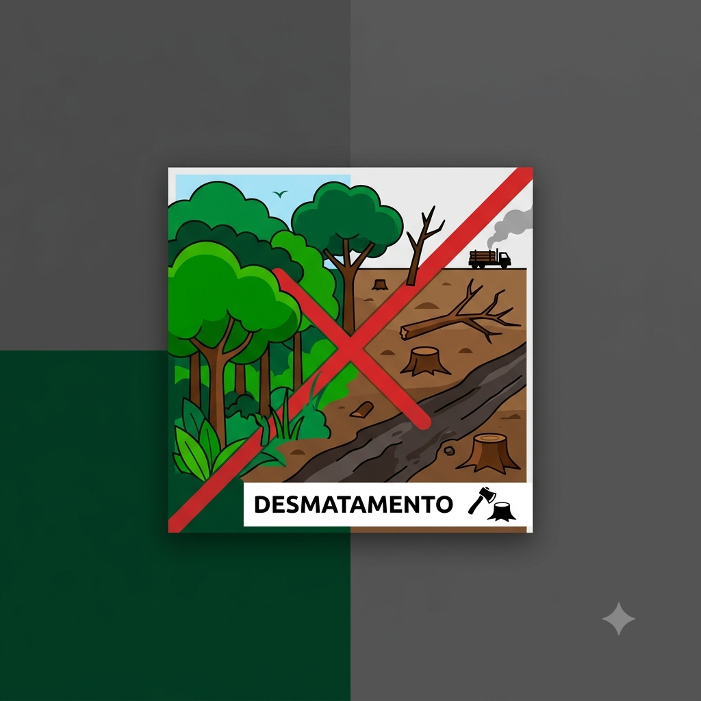

Meu primeiro postPor: Daniel Junji
Boas-vindas ao meu novo blog! Aqui vou compartilhar o impacto das queimadas nas areas verdes.
vou compartilhar sobre o desmatamento das areas verdes

Meu primeiro postPor: Daniel Junji
Boas-vindas ao meu novo blog! Aqui vou compartilhar o impacto das queimadas nas areas verdes.